This audio format consists of a grooved disc made of shellac, lacquer, vinyl, or aluminum. Discs may have a metal, resin, cardboard, or glass core. The modulated sound information is inscribed in the surface material in grooves, which are played back using a needle or stylus. Phonograph records emerged in the late 1890s and ruled as the predominant format for recorded sound from the 1910s through the late 1970s.
Shellac 78 with original fiberboard sleeve. Although many discs will be found in these enclosures, they are not recommended for long-term storage and should be assumed to be acidic. Image by Flickr user DRs Kulturarvsprojekt, available under a Creative Commons Attribution ShareAlike license (CC BY-SA 2.0).
13" diameter shellac disc.
Shellac disc broken along outer edge.
Shellac disc in fragments.
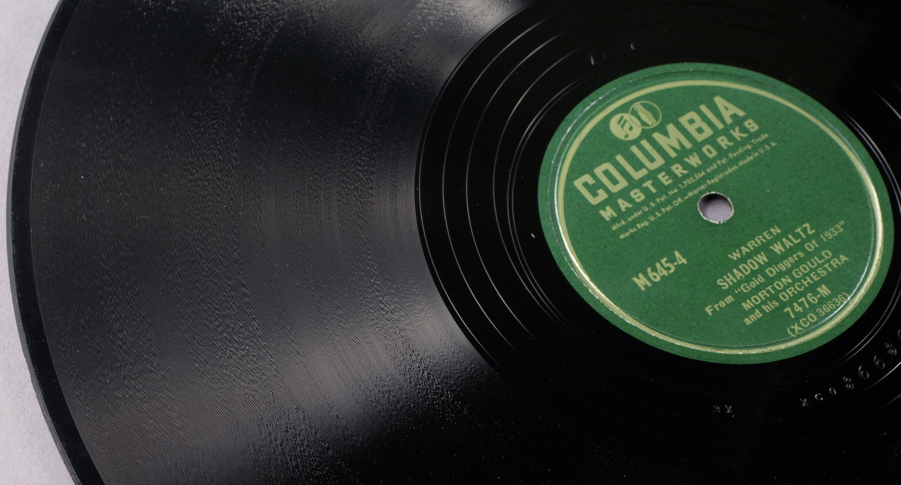
Shellac disc. Note the thickness at the disc's edge. Shellac discs are typically thicker than other discs.
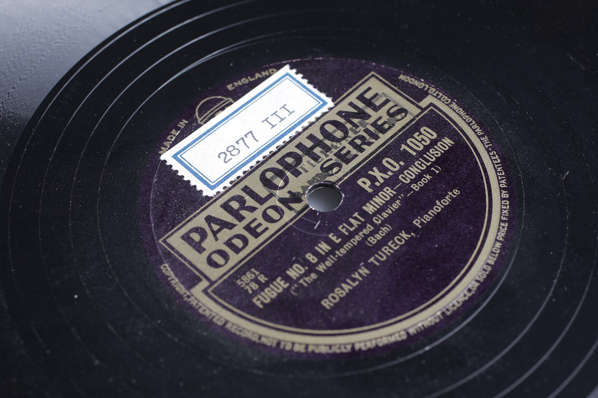
From this angle, the shellac disc's center spindle hole reveals that the disc has no substrate material. Image by Flickr user DRs Kulturarvsprojekt, available under a Creative Commons Attribution ShareAlike license (CC BY-SA 2.0). Courtesy of the Danish Broadcasting Corporation.
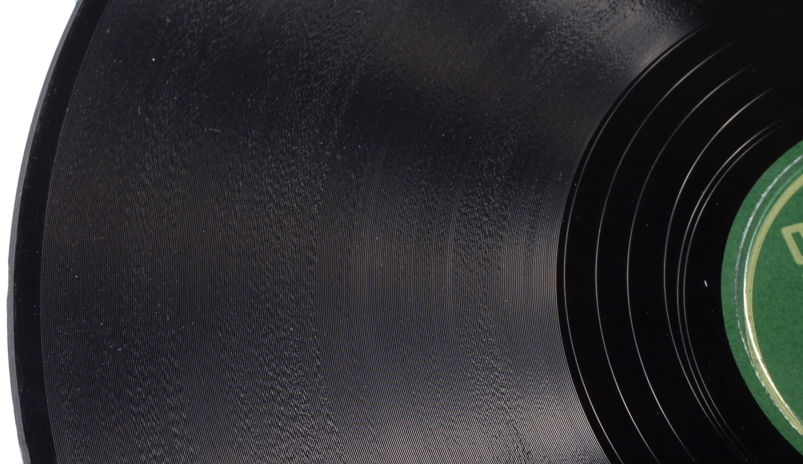
Shellac disc grooves are considerably larger than those of a microgroove vinyl LP.
Commercially pressed 78 disc label. Image by Flickr user Leo Reynolds, available under a Creative Commons Attribution-NonCommercial-ShareAlike license (CC BY-NC-SA 2.0).
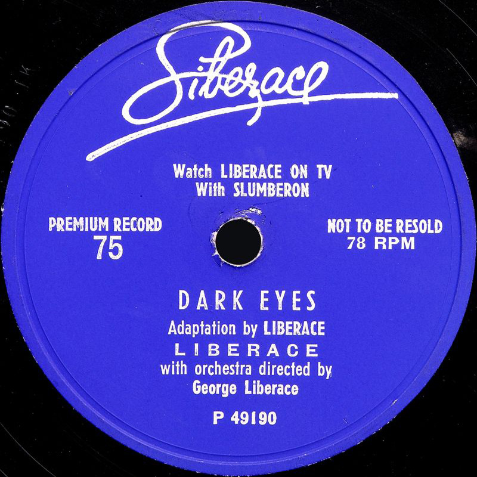
Commercially pressed 78 disc label. Image by Flickr user Oliver Hammond, available under a Creative Commons Attribution-NonCommercial-ShareAlike license (CC BY-NC-SA 2.0).
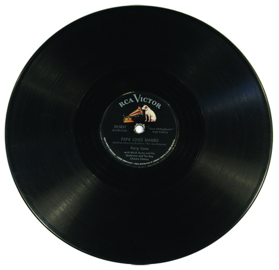
10" 78rpm shellac disc. Image courtesy of Aaron Coe, The Cutting Corporation.
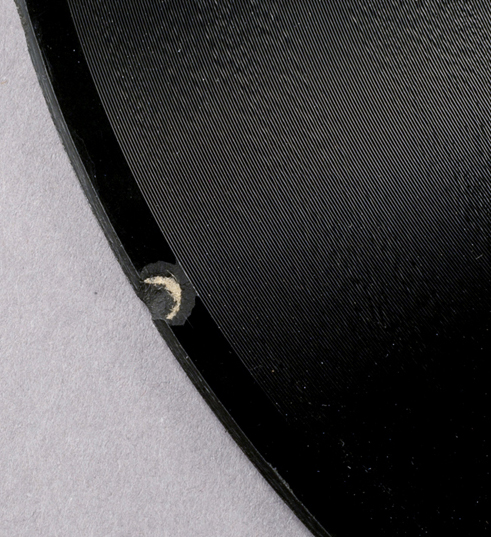
Paper substrate fibers exposed through chipped edge.
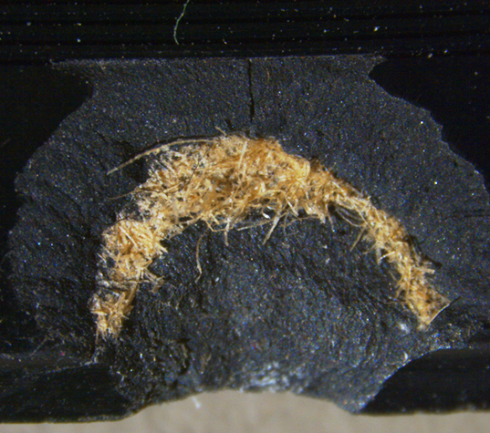
Paper substrate fibers exposed through chipped edge (under magnification).
Synonyms
78 (rpm)
Wax record
Dates
1897 – late 1950s
Common Size(s)
7"; 10"; 12"; 16" (diameter)
Description
Shellac-type is a recorded sound format that consists of a coarse-grooved disc made of shellac resin with varying components, typically clay, slate, and limestone as filler, carbon black for color, and cotton fibers for strength. Originally known as Durinoid, shellac may contain other resins, plasticizers, and hardeners. Shellac discs are most commonly one of the following sizes: 7-inch, 10-inch, 12-inch, and 16-inch. They are typically played back at the following speeds: 30 rpm, 70 rpm, and 78 rpm. Shellac is often correlated with 10" 78s. Commercially pressed 78 disc labels are visibly pressed into the shellac, whereas most vinyl and lacquer discs are glued on.
Composition
Shellac-based disc, with a variety of additional filler and additive materials
Deterioration
All grooved disc media is susceptible to warpage, breakage, groove wear, and surface contamination. Types of surface contamination include: dirt, dust, mold, and other foreign materials, all of which can abrade or damage the grooves and diminish playback sound quality. Excessive surface damage and groove wear are generally identifiable on discs that have a dull surface, scratches, pits, and/or cracks.
Risk Level
Shellac-type 78s manufactured post-WWI are relatively stable and not considered especially vulnerable to age-related deterioration or inherent vice. Pre-World War I discs may be composed of more volatile materials and may require greater preservation attention. Shellac records are rigid and brittle. They do not flex like vinyl, and they can break easily because they often do not have a reinforcing substrate like lacquered discs. Presently, playback equipment for this format is still being manufactured.
Playback
All grooved disc media must be played back at the appropriate recording speed. They also require appropriate styli for optimal playback fidelity and to reduce disc damage along with equipment that can support the discs' diameters. Most discs recorded before 1948 have wider grooves (often referred to as "coarse" or "standard" grooves), were recorded using equalizations that differ from current standards, and are generally monophonic. A stylus which can support coarse groove and monophonic recordings is necessary for proper playback.
Early 78s were often not cut at exactly 78 rotations per minute (rpm), so correct speed may not be standardized from one disc to the next. Additionally, groove sizes vary, so a variety of different styli are necessary to ensure that the stylus used is not too small or wide, which can adversely affect playback quality and/or irreparably damage the disc.
Background
The earliest discs are made of a shellac-type material with various fillers. Shellac 78s were produced commercially from 1897 until the late 1950s, but their use declined steadily after World War II as music recording labels shifted toward lacquered records.
Storage Environment
Allowable Fluctuation: ±2°F; ±5% RH
Ideal
Acceptable
Temp.
40–54°F (4.5–12°C)
33–44°F (0.5–6.5°C)
RH
30–50% RH
Storage Enclosure(s)
Acid-free enclosures are strongly advised. Each item should have its own enclosure to protect it from dust, handling damage, and changes in environmental conditions. All storage materials should pass the Photographic Activity Test (PAT) as specified in ISO Standard 18916:2007 and must be chemically and physically stable.
Plastic: Polyethylene, polypropylene, or polyester (a.k.a. Mylar D or Melinex 516). No PVC or acetate.
Archival recordings might be found directly within a paper housing. These paper sleeves are problematic as they are typically acidic and will degrade on the recording surface, leaving behind "paper flour" deposits of dust, fibers, and flakes. Some older discs are found housed in a paper binder. These discs should be removed and housed in individual sleeves as the binder is most likely made of acidic paper. Additionally, brittle discs like shellac can be damaged by getting caught in the edge of a failing binder. Remove any shrink wrap that is still on the outer sleeve, since it can continue to shrink and harm the original outer sleeve or the recording itself. Ideally, discs should be housed in a high density polyethylene sleeve. As a rule of thumb: "bad" plastic sleeves are clear and have a sticky or tacky feel; "good" sleeves are frosted in appearance and have a slippery feel. In many cases, the plastic-sleeved disc may be thin enough to fit in the original sleeve.
Storage Orientation
Similarly sized discs should be stored together vertically. Shelves should have full-height and full-depth dividers spaced 4 to 6 inches apart that are secured at the top and bottom. Grooved discs are heavy. They can exert pressure and warp if too many discs are shelved together at an angle without dividers. Wood cabinets should be avoided. Enameled steel, stainless steel, or anodized aluminum are preferred.
Handling and Care
Regardless of composition, discs should be handled by the edges only, with a hand at about 3 and 9 o’clock (so as not to place stress on the disc) and ideally with archival gloves on. Never leave media in a playback machine; always return to storage enclosure when not in use.
There are many record cleaning formulas out there, including Library of Congress's recommended Tergitol™-based cleaning solution. Gaining more widespread use among recorded sound archivists that deal with a wide variety of grooved disc materials is the following mix:
11" aluminum disc. Courtesy of Jack Brighton, Illinois Public Media / WILL.
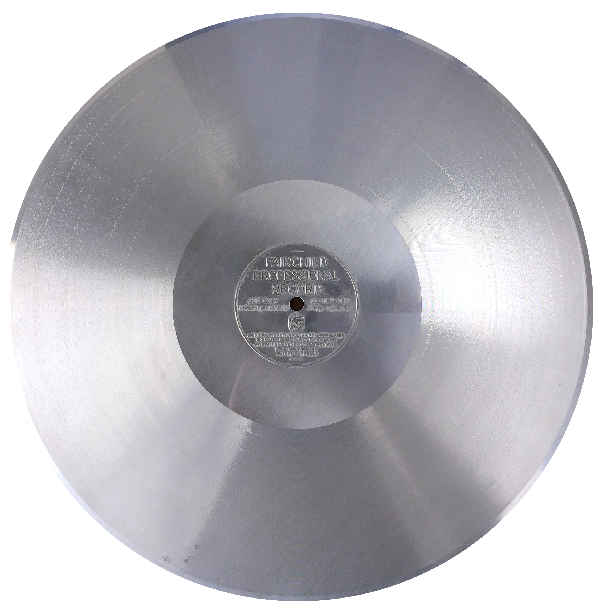
Aluminum disc. Image courtesy of Aaron Coe, The Cutting Corporation.
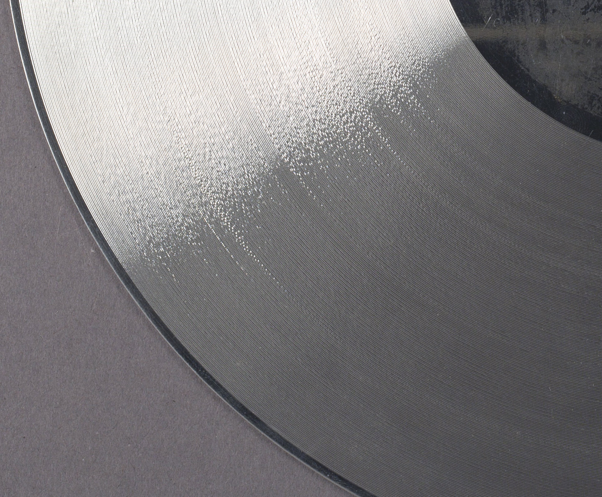
Aluminum disc grooves. Courtesy of Jack Brighton, Illinois Public Media / WILL.
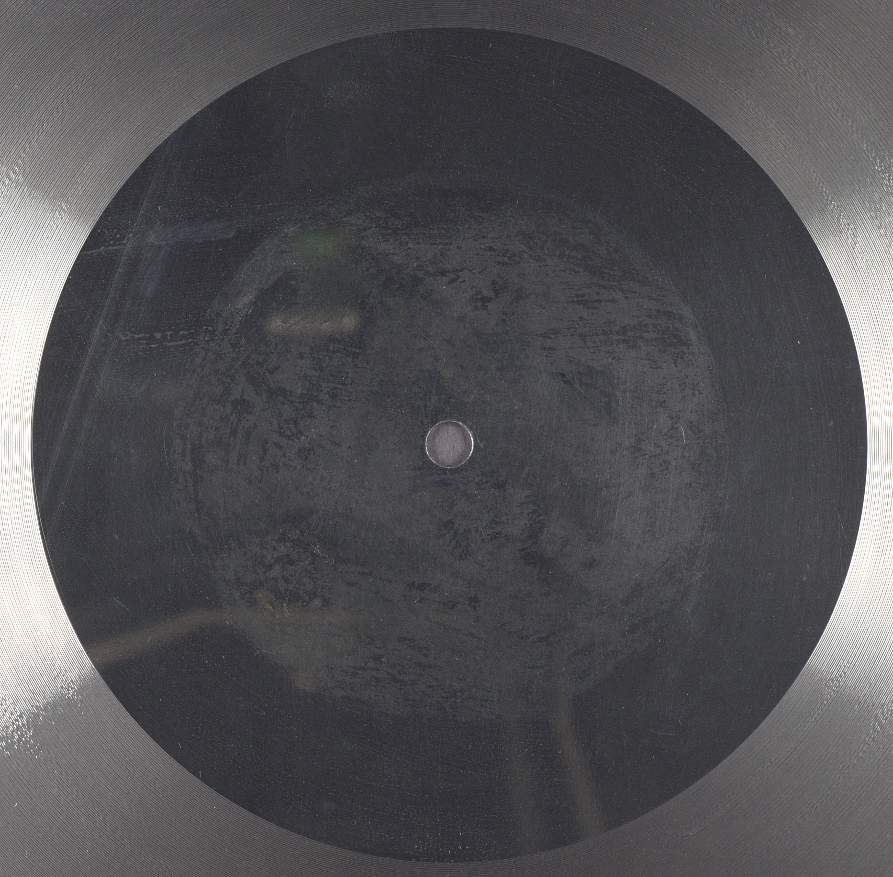
Slightly corroded, dull aluminum disc surface produced by an adhesive that once held the label on. Courtesy of Jack Brighton, Illinois Public Media / WILL.
Synonyms
Voice Record
Fairchild disc
Aluminum transcription disc
Dates
Late 1920s – 1940s
Common Size(s)
10"; 12"; 16" (diameter)
Description
The aluminum disc recording is a relatively obscure phonograph format for one-off home and radio transcription recordings in the late 1920s through 1940s. Unlike any other phonograph, the aluminum transcription disc is plainly identifiable as uncoated, bare aluminum. These records have a limited dynamic range and inferior sound quality. The recording should be assumed to be unique and will require a delicate fiber stylus for responsible playback.
Composition
Aluminum (uncoated)
Deterioration
All grooved disc media is susceptible to warpage, breakage, groove wear, and surface contamination. Surface contamination includes dirt, dust, mold, and other foreign materials, all of which can damage the grooves and diminish playback sound quality. Aluminum disc recordings are rough-sounding by nature, and care must be taken to preserve the signal etched into the relatively soft aluminum. If stored in an ideal environment (relatively low and stable temperature and humidity), these discs are stable. However, high humidity and temperatures can adversely affect these discs by creating prime conditions for corrosion and fungal growth.
Discs can be damaged by attendant materials like acidic cardboard (exterior) sleeves and non-archival plastic or paper (interior) sleeves, although some plastic sleeves may be acceptable for archival storage.
Risk Level
Aluminum discs are not considered especially vulnerable to age-related deterioration or inherent vice. They are generally chemically stable and have a relatively long lifespan when stored properly. However, neglectful playback may damage the recorded information. Discs of this type are generally a mid-level preservation priority.
Playback
All grooved disc media must be played back at the appropriate recording speed. They also require appropriate styli for optimal playback fidelity and to reduce disc damage along with equipment that can support the discs' diameters. Aluminum disc grooves are surprisingly malleable and were originally intended for use with either wooden needles or similarly forgiving fiber styli (e.g. cacti or bamboo). Just one playback with a modern standard-issue steel stylus can do irreparable damage to the grooves. There are some lightweight styli designed for use with 78s that may also handle aluminum discs. Using too large of a stylus and too heavy weight tracking can carve at the grooves on the disc, irreparably damaging the recorded information and preventing future playback. Select playback equipment with caution.
Background
Before nitrocellulose-lacquered discs came into widespread use in broadcast and home recording spheres in the 1940s, bare aluminum discs were used for one-off recording applications. Introduced in the late 1920s, they saw a modest adoption in the 1930s both in radio as transcription discs used for event capture and sponsor spots and in coin-operated "record-your-voice" booths and amateur recording studios. Already on their way out by the early 1940s, many of these discs met their fate in World War II scrap metal drives.
Storage Environment
Allowable Fluctuation: ±2°F; ±5% RH
Ideal
Acceptable
Temp.
40–54°F (4.5–12°C)
33–44°F (0.5–6.5°C)
RH
30–50% RH
Storage Enclosure(s)
Acid-free enclosures are advised. Each item should have its own enclosure to protect it from dust, handling damage, and changes in environmental conditions. All storage materials should pass the Photographic Activity Test (PAT) as specified in ISO Standard 18916:2007 and must be chemically and physically stable.
Plastic: Polyethylene, polypropylene, or polyester (a.k.a. Mylar D or Melinex 516). No PVC or acetate.
Archival recordings might be found directly within a paper housing. These paper sleeves are problematic as they are typically acidic and will degrade on the recording surface, leaving behind "paper flour" deposits of dust, fibers, and flakes. As a rule of thumb: "bad" plastic sleeves are clear and have a sticky or tacky feel; "good" sleeves are frosted in appearance and have a slippery feel. In many cases, the plastic-sleeved disc may be thin enough to fit in the original sleeve. Non-archival sleeves should ideally be replaced with high density polyethylene sleeves. If the original paper sleeve contains graphics or artwork that are of archival value, some archival sleeves may be thin enough to fit inside the original. In order to prevent migration of materials to the disc's surface, try to store discs in neutral plastic inner liners made of high pressure polyethylene contained in neutral envelopes, with acidic original covers stored separately.
Some older discs are found housed in a paper binder. These discs should be removed and housed in individual sleeves as the binder is most likely made of acidic paper. Remove any shrink wrap that is still on the outer sleeve, since it can continue to shrink and harm the original outer sleeve or the recording itself.
Storage Orientation
Similarly sized discs should be stored together vertically. Shelves should have full-height and full-depth dividers spaced 4 to 6 inches apart that are secured at the top and bottom. Grooved discs are heavy. They can exert pressure and warp if too many discs are shelved together at an angle without dividers. Wood cabinets should be avoided. Enameled steel, stainless steel, or anodized aluminum are preferred.
Handling and Care
Regardless of composition, discs should be handled by the edges only, with a hand at about 3 and 9 o’clock (so not to place stress on the disc) and ideally with archival gloves on. Never leave media in a playback machine; always return to storage enclosure when not in use.
Lacquer Disc
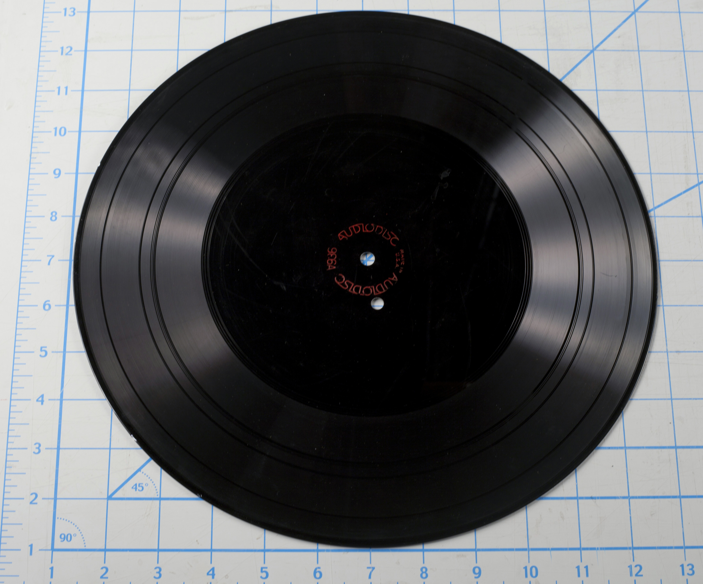
13" lacquer transcription disc. Note the multiple spindle holes in the center, which are typical for transcription discs.
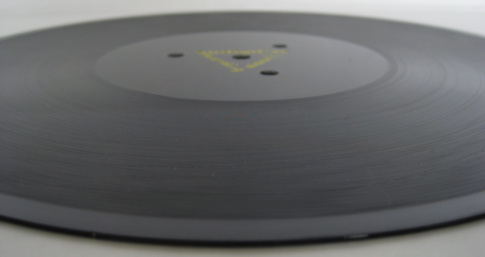
Lacquer transcription disc. Image by Flickr user Betsian, available under a Creative Commons Attribution-NonCommercial-ShareAlike license (CC BY-NC-SA 2.0).
Voice-O-Graph home recording lacquer disc. Image courtesy of Aaron Coe, The Cutting Corporation.
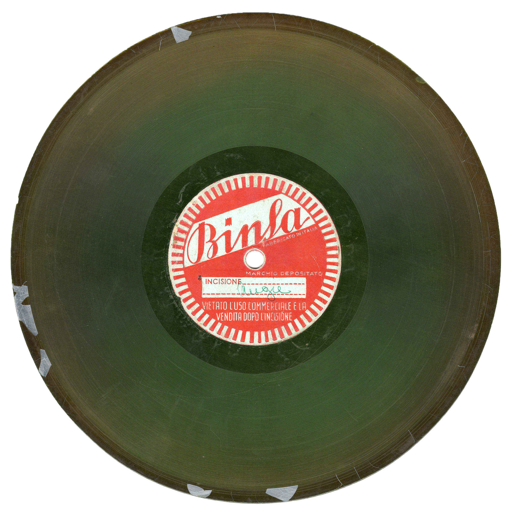
Home recording lacquer disc with flaking/delaminating that exposes a metal substrate (core). Image courtesy of Aaron Coe, The Cutting Corporation.
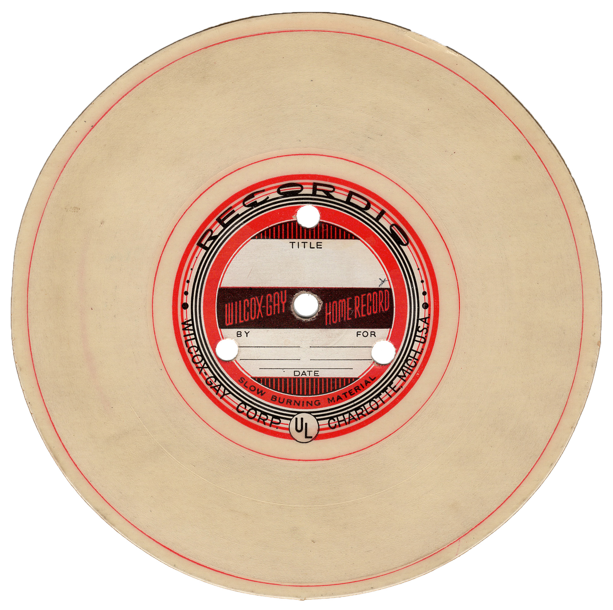
White-colored lacquer disc. Image courtesy of Aaron Coe, The Cutting Corporation.
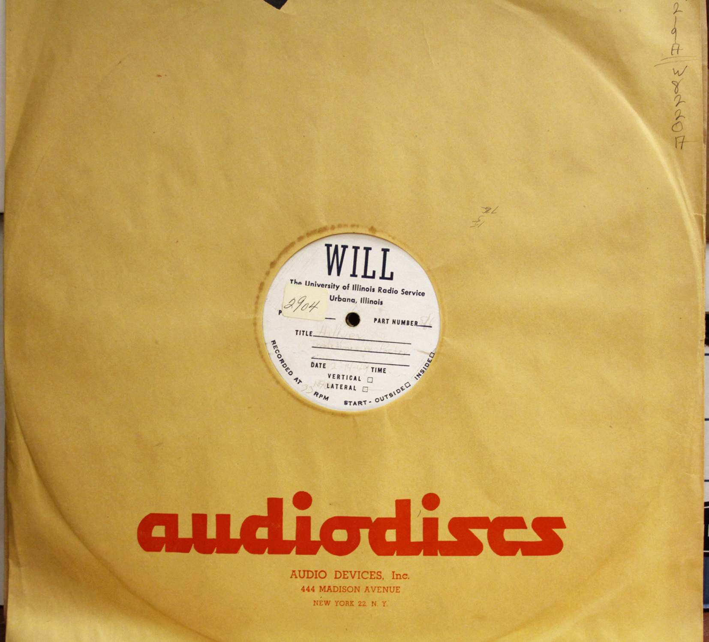
16" lacquer transcription disc in original paper sleeve. Low-grade paper enclosures like these are not recommended for long-term storage. Image of a recording from the University Archives. Image courtesy of the University of Illinois Board of Trustees.
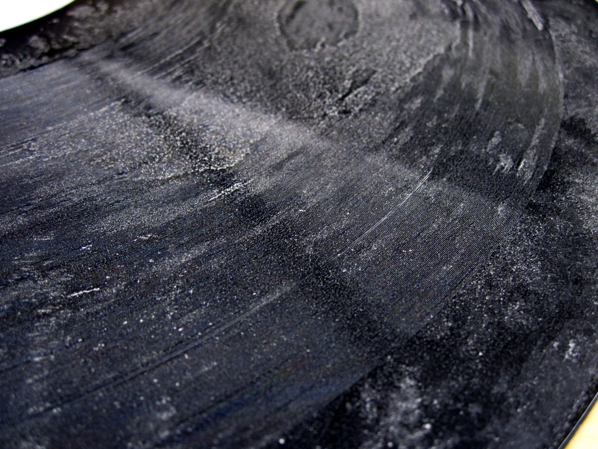
Palmitic acid deposits on a transcription disc's nitrocellulose laminate surface.
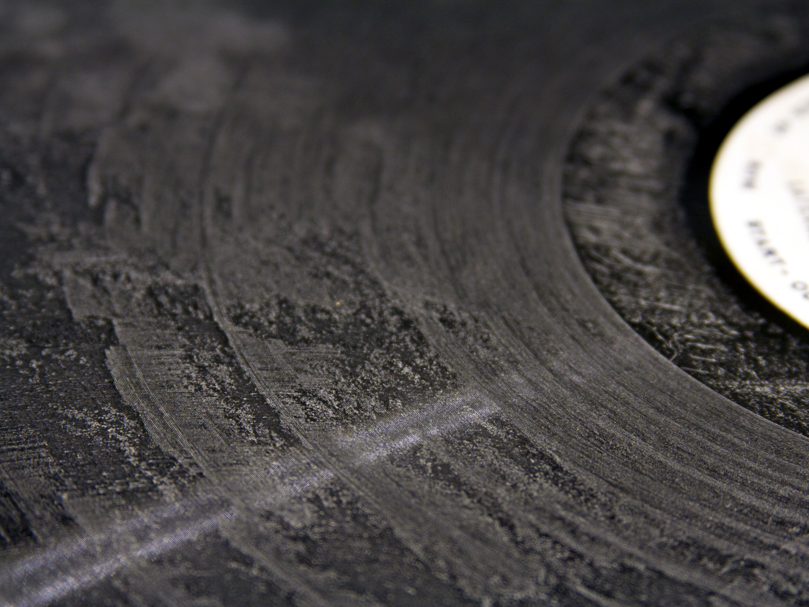
Palmitic acid deposits on a transcription disc's nitrocellulose laminate surface.
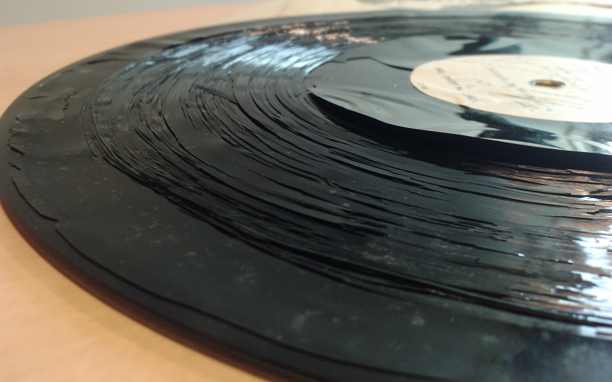
Lacquer disc delamination. Image by Flickr user windthoek, available under a Creative Commons Attribution-NonCommercial-NoDerivs license (CC BY-NC-ND 2.0).
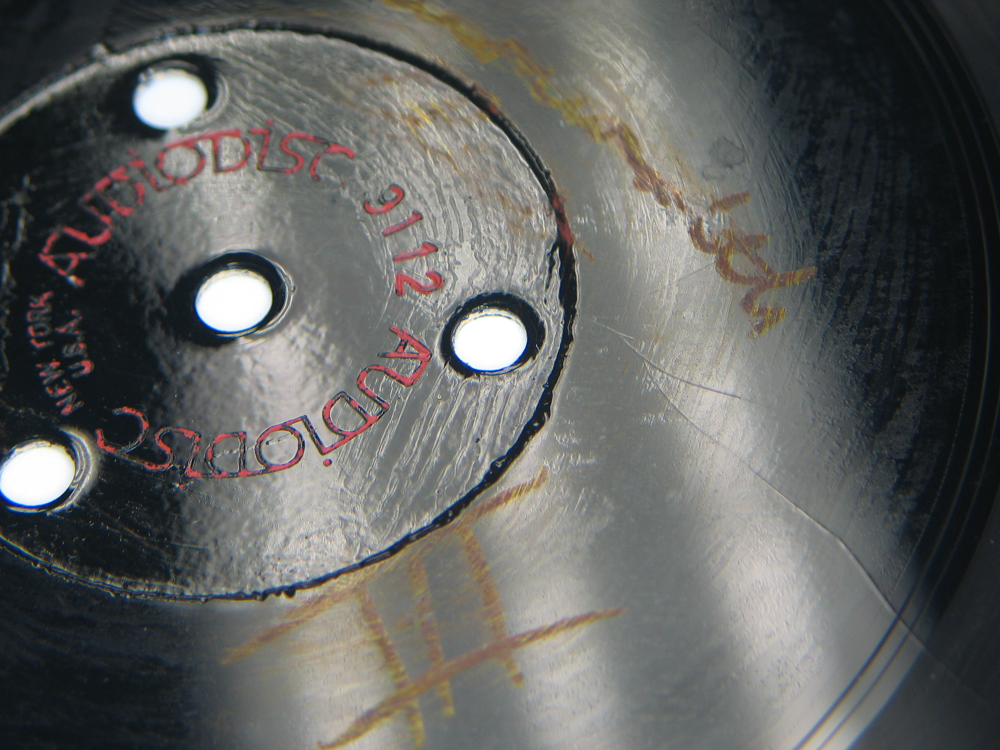
Lacquer disc with cracked glass substrate. Image by Flickr user Brandon Burke, available under a Creative Commons Attribution-NonCommercial-NoDerivs license (CC BY-NC-ND 2.0).
Laminate disc with exposed aluminum substrate. Image by Wikimedia Commons user Hux, available in the public domain.
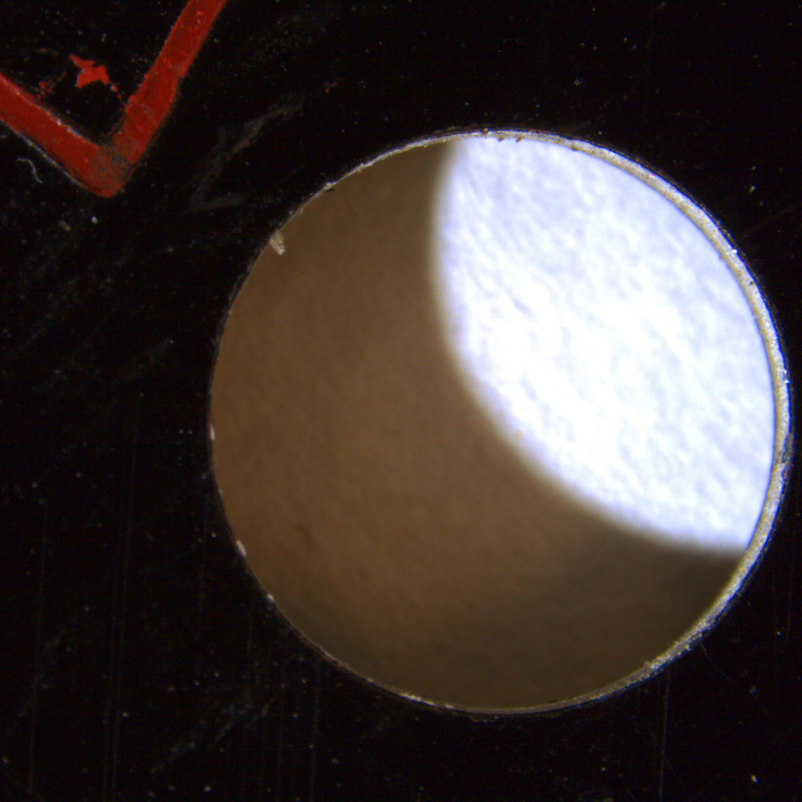
Laminate disc with exposed aluminum substrate.
Synonyms
Laminate disc
Transcription disc
Instantaneous disc
"Acetate" disc
Direct-cut disc
Dates
Late 1920s – 1970s
Common Size(s)
7"; 8"; 10"; 12"; 13"; 16" (diameter)
Description
Lacquer discs are a grooved recorded sound format composed of either cellulose nitrate or acetate cellulose lacquer on a core made of aluminum, steel, glass, or fiber (cardboard). The most common sizes include: 10-inch, 12-inch, 13-inch, or 16-inch. Although atypical, smaller and larger disc sizes can be found in collections. Multiple spindle holes in the center are typical for transcription discs. In the home recording market, there were many bold trademark colors and label graphics.
Composition
Disc core/substrate (aluminum, steel, glass, fiberboard) laminated with a lacquer (cellulose nitrate or acetate cellulose)
Deterioration
All grooved disc media is susceptible to warpage, breakage, groove wear, and surface contamination. Sources of surface contamination include dirt, dust, mold, and other foreign materials, all of which can abrade or damage the grooves and diminish playback sound quality. Excessive surface damage and groove wear are generally identifiable on discs that have a dull surface, scratches, pits, and/or cracks. Lacquer discs are prone to unpredictable and sudden catastrophic failure due to surface delamination, which is often caused by storage environments with high humidity and/or temperature. In this process, the lacquer coating of a disc contracts on its core. As the coating cracks or peels away from the core, the information that it contained is lost. Lacquer discs may additionally suffer from plasticizer loss, which causes the disc coating to become brittle and can lead to delamination. Plasticizer loss, or exudiation, is identifiable as a white, greasy powder with a crystalline appearance that appears on the disc's surface. Sometimes mistaken for mold, the powder is in fact fatty acids (palmitic or stearic) that have migrated to the disc's surface as the plasticizers begin to deteriorate. Acids, like those left by fingerprints, will precipitate the formation of dusty, white palmitic acid deposits. Over time, these deposits can cause permanent damage to the recorded information. Hasty attempts to clean it off may do further harm.
Risk Level
Lacquer discs often contain unique and original material since content is captured and inscribed to the disc immediately. Unlike most other types of grooved discs, these discs are not created through a molding process. Instead, the discs are "direct-cut": the same discs are used for both the recording and the replay without the need for galvanoplastic processing and pressing. The nitrocellulose laminate of lacquer discs is hygroscopic—it can swell and possibly delaminate when exposed to high humidity or water. This results in an absolute loss of recorded information. These discs are considered a high priority for preservation reformatting, since they are prone to sudden failure and signal loss and since they often hold unique content.
Playback
All grooved disc media must be played back at the appropriate recording speed. They also require appropriate styli for optimal playback fidelity and to reduce disc damage along with equipment that can support the discs' diameters. Opposite of how most LP records are played, lacquer discs may also play from the inside out, such that the starting groove begins near the center of the disc. Most discs recorded before 1948 have wider grooves (often referred to as "coarse" or "standard" grooves), were recorded using equalizations that differ from current standards, and are generally monophonic. A stylus which can support coarse groove and monophonic recordings is necessary for proper playback.
Background
Lacquer discs were in use predominantly in the 1930s to 1940s until magnetic tape became widely adopted in the 1950s. Often found among early to mid-twentieth century broadcast collections, the radio transcription disc was a form of lacquer disc cut for use at a later broadcast time. They were often used to record radio programs and field recordings as well as for office and home dictation.
Storage Environment
Allowable Fluctuation: ±2°F; ±5% RH
Ideal
Acceptable
Temp.
40–54°F (4.5–12°C)
33–44°F (0.5–6.5°C)
RH
30–50% RH
Storage Enclosure(s)
Acid-free enclosures are strongly advised. Each item should have its own enclosure to protect it from dust, handling damage, and changes in environmental conditions. All storage materials should pass the Photographic Activity Test (PAT) as specified in ISO Standard 18916:2007 and must be chemically and physically stable.
Plastic: Polyethylene, polypropylene, or polyester (a.k.a. Mylar D or Melinex 516). No PVC or acetate.
Archival recordings might be found directly within a paper housing. These paper sleeves are problematic as they are typically acidic and will degrade on the recording surface, leaving behind "paper flour" deposits of dust, fibers, and flakes. Some older discs are found housed in a paper binder. These discs should be removed and housed in individual sleeves as the binder is most likely made of acidic paper. Additionally, brittle discs can be damaged by getting caught in the edge of a failing binder. Remove any shrink wrap that is still on the outer sleeve, since it can continue to shrink and harm the original outer sleeve or the recording itself. Ideally, discs should be housed in a high density polyethylene sleeve. As a rule of thumb: "bad" plastic sleeves are clear and have a sticky or tacky feel; "good" sleeves are frosted in appearance and have a slippery feel. In many cases, the plastic-sleeved disc may be thin enough to fit in the original sleeve.
Storage Orientation
Similarly sized discs should be stored together vertically. Shelves should have full-height and full-depth dividers spaced 4 to 6 inches apart that are secured at the top and bottom. Grooved discs are heavy; they can exert pressure and warp if too many discs are shelved together at an angle without dividers. Store acetate discs separately from other materials in order to mitigate the effects of acetic acid decomposition (e.g. off-gassing). Wood cabinets should be avoided. Enameled steel, stainless steel, or anodized aluminum are preferred.
Handling and Care
Regardless of composition, discs should be handled by the edges only, with a hand at about 3 and 9 o’clock (so as not to place stress on the disc) and ideally with archival gloves on. Never leave media in a playback machine; always return to storage enclosure when not in use.
There are many record cleaning formulas out there, including Library of Congress's recommended Tergitol™-based cleaning solution. Gaining more widespread use among recorded sound archivists that deal with a wide variety of grooved disc materials is the following mix:
1–2 parts clear ammonia (3–4 parts if palmitic acid deposits are evident)
Vinyl Disc
Vinyl LP (33⅓rpm) record, measuring 12" in diameter.
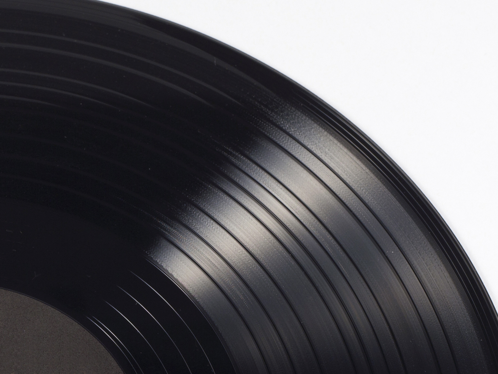
Vinyl LP record detail. Note the gaps between intermittent variances in grooves—these are evident gaps of silence between songs that are typical for music EPs (10") and LPs (12").
LP grooves viewed in raking light (side-view). Image by Flickr user Sami Pyylampi, available under a Creative Commons Attribution-ShareAlike license (CC BY-SA 2.0).
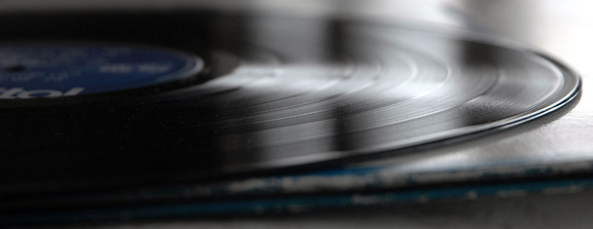
LP grooves viewed in raking light. Also note record thickness and rounded edge. Image by Flickr user Peter Organisciak, available under a Creative Commons Attribution-ShareAlike license (CC BY-SA 2.0).
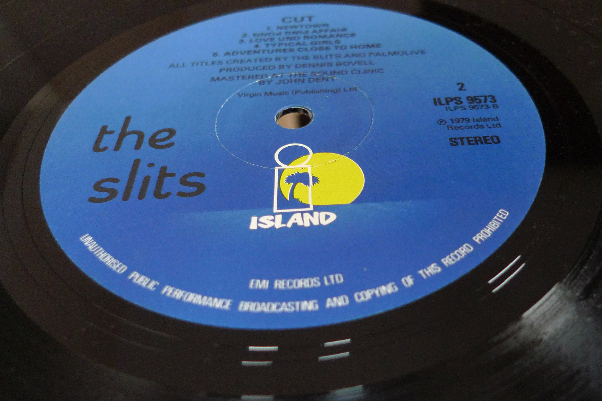
Most vinyl disc labels are glued onto the surface. Image by Flickr user John Keogh, available under a Creative Commons Attribution-NonCommercial license (CC BY-NC 2.0).
Red vinyl record. Image by Wikimedia Commons user Alex:D, available under a Creative Commons Attribution-ShareAlike license (CC BY-SA 3.0).
Synonyms
Microgroove
Long play (LP)
7-inch (single); 12-inch
Dates
Late 1940s – present
Common Size(s)
7"; 10"; 12" (diameter)
Description
Vinyl is a grooved disc audio format composed of polystyrene or polyvinyl chloride with stabilizers. There are also designations within the format, such as the "long playing" (LP) record, "extended play" (EP) record, or "single." In these cases, the diameter and playback speed (revolutions per minute, or "rpm") are often used interchangeably to refer to the disc format subtype. For instance, a "12-inch" (LP) is conventionally played at 33⅓ rpm. A "7-inch" (single) is played at 45 rpm and may also be referred to as a "45." The most common sizes are: 7-inch, 10-inch, and 12-inch. Most vinyl disc labels are glued onto surface, whereas most commercially pressed shellac disc labels are visibly embedded into the shellac surface.
Composition
Polyvinyl chloride (vinyl) or polystyrene disc
Deterioration
All grooved disc media is susceptible to warpage, breakage, groove wear, and surface contamination. Surface contamination includes dirt, dust, mold, and other foreign materials, all of which can abrade or damage the grooves and diminish playback sound quality. Vinyl discs are especially prone to scratches and abrasion due to their relatively soft material. If stored in an ideal environment (relatively low, stable temperature and humidity), vinyl discs are stable. However, high humidity and temperatures can adversely affect these discs by creating prime conditions for fungal growth. High temperatures may also cause the plastics to soften and warp, reducing the disc's sound quality or playability. Additionally, direct sunlight and UV rays can adversely affect the soft vinyl material.
Discs can be damaged by attendant materials like acidic cardboard (exterior) sleeves and non-archival plastic or paper (interior) sleeves, although some plastic sleeves may be acceptable for archival storage.
Risk Level
Vinyl-type 45s and LPs are not presently considered especially vulnerable to age-related deterioration or inherent vice. They are generally chemically stable and have a relatively long lifespan when stored properly. Playback equipment is still being manufactured. Therefore, discs of this type are generally a low preservation priority.
Playback
All grooved disc media must be played back at the appropriate recording speed. They require appropriate styli for optimal playback fidelity and to reduce disc damage along with equipment that can support the discs' diameters. Most vinyl discs are microgroove, which means they have nearly twice the number of grooves as a coarse groove disc. These discs are often stereo with standard equalization but only an examination of the discs and their supporting documentation will clarify groove type. Using too large of a stylus and too heavy weight tracking can gouge out the grooves on the disc, irreparably damaging the disc and preventing future playback.
Background
Plastic-based discs were developed in the late 1940s and are still in use.
Storage Environment
Allowable Fluctuation: ±2°F; ±5% RH
Ideal
Acceptable
Temp.
40–54°F (4.5–12°C)
33–44°F (0.5–6.5°C)
RH
30–50% RH
Storage Enclosure(s)
Acid-free enclosures are strongly advised. Each item should have its own enclosure to protect it from dust, handling damage, and changes in environmental conditions. All storage materials should pass the Photographic Activity Test (PAT) as specified in ISO Standard 18916:2007 and must be chemically and physically stable.
Plastic: Polyethylene, polypropylene, or polyester (a.k.a. Mylar D or Melinex 516). No PVC or acetate.
Archival recordings might be found directly within a paper housing. These paper sleeves are problematic as they are typically acidic and will degrade on the recording surface, leaving behind "paper flour" deposits of dust, fibers, and flakes. As a rule of thumb: "bad" plastic sleeves are clear and have a sticky or tacky feel; "good" sleeves are frosted in appearance and have a slippery feel. In many cases, the plastic-sleeved disc may be thin enough to fit in the original sleeve. Non-archival sleeves should ideally be replaced with high density polyethylene sleeves. If the original paper sleeve contains graphics or artwork that are of archival value, some archival sleeves may be thin enough to fit inside the original. In order to prevent migration of materials to the disc's surface, try to store microgroove discs in neutral plastic inner liners made of high pressure polyethylene contained in neutral envelopes, with acidic original covers stored separately.
Some older discs are found housed in a paper binder. These discs should be removed and housed in individual sleeves since the binder is most likely made of acidic paper. Additionally, brittle discs can be damaged by getting caught in the edge of a failing binder. Remove any shrink wrap that is still on the outer sleeve, since it can continue to shrink and harm the original outer sleeve or the recording itself.
Storage Orientation
Similarly sized discs should be stored together vertically. Shelves should have full-height and full-depth dividers spaced 4 to 6 inches apart that are secured at the top and bottom. Grooved discs are heavy; they can exert pressure and warp if too many discs are shelved together at an angle without dividers. Wood cabinets should be avoided. Enameled steel, stainless steel, or anodized aluminum are preferred.
Handling and Care
Regardless of composition, discs should be handled by the edges only, with a hand at about 3 and 9 o’clock (so not to place stress on the disc) and ideally with archival gloves on. Never leave media in a playback machine; always return to storage enclosure when not in use.
There are many record cleaning formulas out there, including Library of Congress's recommended Tergitol™-based cleaning solution. Gaining more widespread use among recorded sound archivists that deal with a wide variety of grooved disc materials is the following mix:
Composed of some type of plastic or resin (usually nitrocellulose) surrounding a core
Core can be steel, cardboard, glass, or aluminum (most common); glass core discs are the most fragile
Handwritten or non-commercially printed label, if labeled
Viewing spindle holes at an angle may reveal a glint of metallic or brownish, paper-like material (core material)
Often contain more than one spindle hole; extra holes may be obscured by a label but can be determined by shining a light source through.
May exhibit surface peeling (delaminating). If it is delaminating, this indicates that the media on the disc is failing.
Heavier than vinyl and lighter than shellac, depending on the core material
Typically less flexible than a vinyl disc and less rigid than shellac
Occur in a variety of diameters ranging from 20" to 16" to 7"
Radio transcription discs are often 16" lacquer discs
Lacquer discs can be made of cellulose nitrate on a core. These discs are susceptible to surface and core deterioration. The surface coating is prone to shrinking away from the core and to plasticizer loss, which appears as a whitish, mold-like contamination on the surface. All lacquer discs are fragile, but glass cores are especially so and can easily break if not handled gently.
When assessing the condition of the disc, observe if there is any coating flaking off of the core. The coating holds the information content and grooves; it is therefore especially important to note any loss of the surface coating.
Laminate disc with exposed aluminum substrate. Image by Wikimedia Commons user Hux, available in the public domain.
Look for a whitish powder on the surface. This indicates mold, plasticizer loss, or the presence of residue. The best way to determine if the contamination is mold is to observe the surface under a microscope. If the contaminant looks fuzzy or lattice-like, it is most likely mold. If it has a more oily and/or crystalline appearance, this is likely palmitic or stearic acid that has formed on the disc surface. (See Lacquer Disc Handling/Care above for palmitic deposit cleaning methods.) Lacquer discs are often of high priority for reformatting due to their fragility. As lacquers are direct-cut discs, they are often unique and their content may not be found elsewhere.
Palmitic acid deposits on transcription disc's nitrocellulose laminate surface. Acids like those left by fingerprints will precipitate the formation of this white, dusty substance. Over time, these deposits can cause permanent damage to the recorded information. Hasty attempts to clean it off may do further harm.
Assessing Glass Discs
EXTREMELY FRAGILE; can easily break or crack beneath the lacquered surface
Semi-translucent when light is projected through them
If GENTLY tapped, will sound slightly different than aluminum discs. WARNING: Tap EXTREMELY gently because previous damage to the glass may be invisible
Slightly heavier compared to aluminum-based discs
Does not warp like fiber- or aluminum-based discs
Most often are recordings between 1941 and 1945
Shine some type of light source upwards from beneath the disc or, ideally, set the disc on light table. If the disc appears translucent, it is most likely glass.
Lacquer disc with cracked glass substrate. Image by Flickr user Brandon Burke, available under a Creative Commons Attribution-NonCommercial-NoDerivs license (CC BY-NC-ND 2.0).
Assessing Shellac Discs
Oldest type of phonograph record; a disc manufactured prior to the late 1920s is most likely shellac
Commercial recordings, which generally have commercially produced center labels
Typically heavier than vinyl or lacquer, especially if the disc is thick
Slightly thicker than vinyl or lacquer, with notable exceptions of those with a wood-pulp core and the lacquered Edison Diamond disc, which is approximately 1/4" thick.
Very hard and rigid compared to vinyl or lacquer discs (and thus not as flexible)
Duller surface compared to well-preserved vinyl or lacquer
Prone to shattering when dropped or bent
Shellac discs are primarily composed of clay (Byritis), powdered shellac, lampblack, and/or cotton fibers; and, they may contain other resins, plasticizers, hardeners, and fillers. While most shellac discs are solid throughout, there are some instances when a shellac disc may have a cardboard core. Shellac discs tend to become brittle with age and are susceptible to damage by mold and acidic substances.
Shellac discs may not scratch as easily as vinyl, and they are generally stable if they have been stored in dry conditions. When examining these discs, you may notice signs of surface damage like dirt, dust, mold, scratches, groove wear (i.e. the disc appears dull and the surface may have a whitish appearance), and brittleness. Be aware that shellac laminate discs with a core either made of cardboard or a shellac-coated material can be especially fragile. To assess if the disc is laminated, gently lift the record, tilt it slightly so that you can see into the center spindle hole, and look for any indication that the shellac is not solid. For example, you may actually see cardboard by looking through the spindle hole. When cleaning shellac discs, DO NOT use fluids that contain alcohol as it can dissolve the shellac.
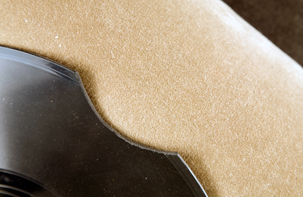
Shellac: Broken edge to illustrate this disc is solid shellac throughout
Assessing Vinyl and Plastic Discs
Most recent phonograph record type; is still presently in use
Typically commercially recordings, which generally have commercially printed labels
Thinner and more flexible than lacquer or shellac
Compared to shellac and other grooved disc materials, plastic is relatively soft. It is more susceptible to surface damage from abrasion that results in scratches and pits affecting the quality of playback. It is also especially susceptible to damage through contact with acidic substances, uneven pressures, hard materials, and high temperatures. Humidity levels and age can also affect the plastic: dry conditions and natural aging can cause embrittlement. Recordings with a dull surface, scratches, and pits may have been damaged through heavy use.
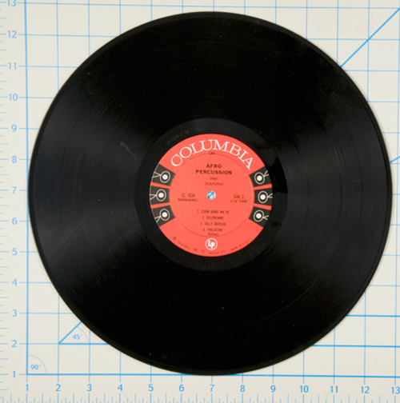
12" vinyl disc
Resources
Breen, M. et al. (2003). Selection criteria of analogue and digital audio contents for transfer to data formats for preservation purposes. Aarhus, Denmark: International Association of Sound and Audiovisual Archives (IASA), 2003. Retrieved from: http://www.iasa-web.org/downloads/publications/taskforce.pdf
Farrington, J. (1991). Preventive maintenance for audio discs and tapes. Notes, 48(2), 437-445.
Gibson, G. D. (1987). Decay and degradation of disk and cylinder recordings in storage. In Eva Orbanz (Ed.), Archiving the audio visual heritage: A joint technical symposium (pp. 47-53). Berlin, Germany: Stiftung Deutsche Kinemathek.
Library of Congress. (2002). Care, handling, and storage of audio visual materials. Retrieved from: http://www.loc.gov/preservation/care/record.html
Paton, C. A. (1998, Spring). Preservation re-recording of audio recordings in archives: Problems, priorities, technologies, and recommendations. American Archivist, 61, 519-546.
Stauderman, S. (2003, July 24-26). Pictorial guide to sound recording media. Paper presented at the symposium on Sound Savings: Preserving Audio Collections. Association of Research Libraries, Austin, TX. Retrieved from: http://www.arl.org/preserv/sound_savings_proceedings/Pictorial_guide.shtml
Warren, R. Jr. (1993). Storage of sound recordings. ARSC Journal, 24(2), 130-158.
Warren, R. Jr. (1994). Handling of sound recordings. ARSC Journal, 25(2), 139-162.